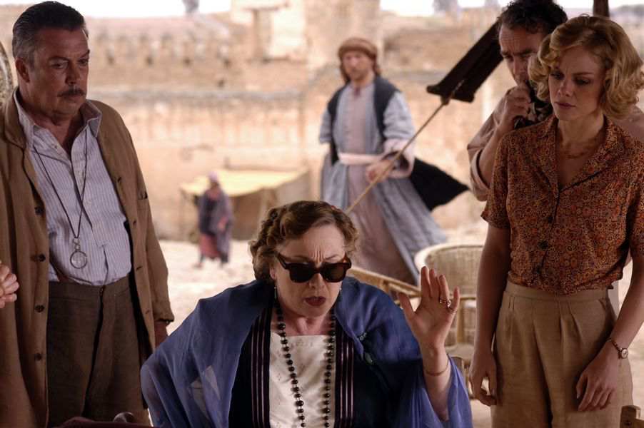

阿嘉莎克里斯汀
推理小說黃金時期中非常有名的作家¬-阿嘉莎克里斯汀生於英國。《東方列車謀殺案》(Murder on the Orient Express)和《ABC謀殺案》(The ABC Murder) 都是她非常暢銷的作品。在她嫁給第一任丈夫Colonel Archibald Christie後，她開始致力於寫作並於1920年出版她第一部作品-《史岱爾莊謀殺案》(The Mysterious Affair at Styles)。她於1926年出版的《羅傑·艾克洛命案》(The Murdered of Roger Ackroyd) 被列為推理小說黃金時代的經典著作。 然而，由於她母親的死亡加上丈夫的不忠誠和使她身心受創，因此她於1928年與丈夫Colonel Archibald Christie離婚。兩年後，克里斯汀認識了她第二任丈夫- Max Mallowan他是一位考古學家教授，他們於一次的中東旅行中認識了彼此並展開他們多次的中東考古之旅。而克里斯汀也將這些中東旅程寫成一本回憶錄- Come, Tell Me How You Live。克里斯汀於中東的旅行經驗提供了許多寫作的靈感，並成為她許多作品中的場景設定。幾部非常有名的作品都是以中東國家為設定，例如: 《尼羅河之死》(Death on the Nile)、《米索布達米亞謀殺案》(Murder in Mesopotamia)、《ABC謀殺案》(The ABC Murder)。
《死 亡 之 約》
當提及阿嘉莎克里斯汀，許多人會想到幾部阿嘉莎的同名改編電影，例如《東方列車謀殺案》(Murder on the Orient Express)。這部作品確實是一部經典之作。但它的懸疑情節經常使觀眾或讀者忽略了阿嘉莎在作品中對場景設定的偏好。而在許多作品中，阿嘉莎對中東場景有特別的喜好。 克里斯汀幾部有名作品的書名隱約透漏了故事的中東場景，例如: 《尼羅河之死》(Death on the Nile)、《米索布達米亞謀殺案》(Murder in Mesopotamia)、 東方列車謀殺案》(Murder on the Orient Express)。然而，《死亡之約》(Appointment with Death)也是一部將場景設定在中東的傑出作品。阿嘉莎將場景移置中東的寫作手法，使她的懸疑作品更為成功。因為場景的轉移，使故事發生在讀者不太熟悉的中國世界，進一步為作品蒙上了神秘的面紗，並使她能隱晦的將她高深的寫作手法更為傑出，也提供了她一個表達個人政治立場的平台。
 在《死亡之約》中，主角一位醫生Gerund 和他的朋友Sarah在耶路撒冷的旅館巧遇了偵探Poirot和 Boynton 一家。很巧地他們之後一起從耶路撒冷到玫瑰之城佩特拉旅行。在這岩石高聳的佩特拉城中，Boynton 太太將面對她的死亡。Boynton 太太在故事中是一位暴君般的老奶奶，掌控家中所有的財物，並控制她的小孩人身自由。而克里斯汀的場景設定與故事中謀殺情節的發展環環相扣。事實上，耶路撒冷和佩特拉的場景設定在故事中透露出Boynton 太太將在佩特拉死亡的命運。而克里斯汀對中東場景的著迷，其實源自於她和第二任丈夫至中東的旅行。
 克里斯汀到中東旅行的經驗，使她對中東的地理、文化有深厚的了解。事實上，她特意挑了耶路撒冷和佩特拉作為兩個場景。在故事一開場，偵探Poirot 無意間在耶路撒冷旅館聽到Boynton 太太的小孩Carol和Raymond對話中的一句話：「你很清楚非殺死她不可,對吧?」。這句話在故事開頭簡潔有力的透漏謀殺案會發生的事實。這也引誘了讀者猜測謀殺案很可能會發生在耶路撒冷旅館。然而，克里斯汀只是將耶路撒冷作為謀殺案的鋪陳。由於耶路撒冷為多個宗教的神聖之地，克里斯汀也刻意在這神聖之地鋪陳懸疑氣氛，但她也想用耶路撒冷的神聖讓讀猜測謀殺案部會發生在這裡。相反的，她將謀殺設定在佩特拉。佩特拉是著名的玫瑰之城，因其特殊的朱紅岩石而得名。而克里斯汀進一步將紅色和玫瑰連結到血和犧牲。這意象隱晦的透露出謀殺案發生於玫瑰之城的可能性。此外，因為Boynton 太太在家中的獨權，使她的小孩無人身自由。也因此，對她的小孩而言，Boynton 太太的死亡成了一種犧牲，使他們能夠重獲自由。因此，在某種程度上來說，佩特拉不只是一座位於中東的神秘城市，它更是一座鋪陳和諷刺Boynton 太太死亡的城市。
Zengin (2016) 曾指出《死亡之約》其實帶有東方主義的元素，但克里斯汀於其中建構了中東國家異質的文化，且明顯區分其與西方國家地位的差別。Zengin 批判克里斯汀對非西方世界的貶低及她所刻劃的負面形象。她對中東負面形象的刻畫很明顯地呈現在此書中。但從另一角度來看，克莉絲汀刻劃其負面形象，進一步提供了犯人的殺人手法。Westholmes是Boynton一家在珮特拉的導遊，也是此書中的犯人。克里斯汀刻劃中東文化的不文明和不先進。她所刻劃的這些負面形象，使犯人穿著骯髒破布，喬裝成中東仕女，使她不易被人發現她的行為。
克里斯汀到中東旅行的經驗，使她對中東的地理、文化有深厚的了解。事實上，她特意挑了耶路撒冷和佩特拉作為兩個場景。在故事一開場，偵探Poirot 無意間在耶路撒冷旅館聽到Boynton 太太的小孩Carol和Raymond對話中的一句話：「你很清楚非殺死她不可,對吧?」。這句話在故事開頭簡潔有力的透漏謀殺案會發生的事實。這也引誘了讀者猜測謀殺案很可能會發生在耶路撒冷旅館。然而，克里斯汀只是將耶路撒冷作為謀殺案的鋪陳。由於耶路撒冷為多個宗教的神聖之地，克里斯汀也刻意在這神聖之地鋪陳懸疑氣氛，但她也想用耶路撒冷的神聖讓讀猜測謀殺案部會發生在這裡。相反的，她將謀殺設定在佩特拉。佩特拉是著名的玫瑰之城，因其特殊的朱紅岩石而得名。而克里斯汀進一步將紅色和玫瑰連結到血和犧牲。這意象隱晦的透露出謀殺案發生於玫瑰之城的可能性。此外，因為Boynton 太太在家中的獨權，使她的小孩無人身自由。也因此，對她的小孩而言，Boynton 太太的死亡成了一種犧牲，使他們能夠重獲自由。因此，在某種程度上來說，佩特拉不只是一座位於中東的神秘城市，它更是一座鋪陳和諷刺Boynton 太太死亡的城市。
Zengin (2016) 曾指出《死亡之約》其實帶有東方主義的元素，但克里斯汀於其中建構了中東國家異質的文化，且明顯區分其與西方國家地位的差別。Zengin 批判克里斯汀對非西方世界的貶低及她所刻劃的負面形象。她對中東負面形象的刻畫很明顯地呈現在此書中。但從另一角度來看，克莉絲汀刻劃其負面形象，進一步提供了犯人的殺人手法。Westholmes是Boynton一家在珮特拉的導遊，也是此書中的犯人。克里斯汀刻劃中東文化的不文明和不先進。她所刻劃的這些負面形象，使犯人穿著骯髒破布，喬裝成中東仕女，使她不易被人發現她的行為。
以廣的角度分析來看，這本書除了是一部傑出的懸疑作品外，也是1930年歐洲法西斯社會的縮影。而克里斯汀刻意將場景設定至中東巧妙地避開此敏感的政治議題，也因此她能更自由的建構Boynton太太所引涉的極權暴君形象，例如: 希特勒和墨索里尼。此書描述Boynton 一家在Boynton太太及權掌控下的生活，這也是對21930年代極權社會下的生活型態的簡易描述。